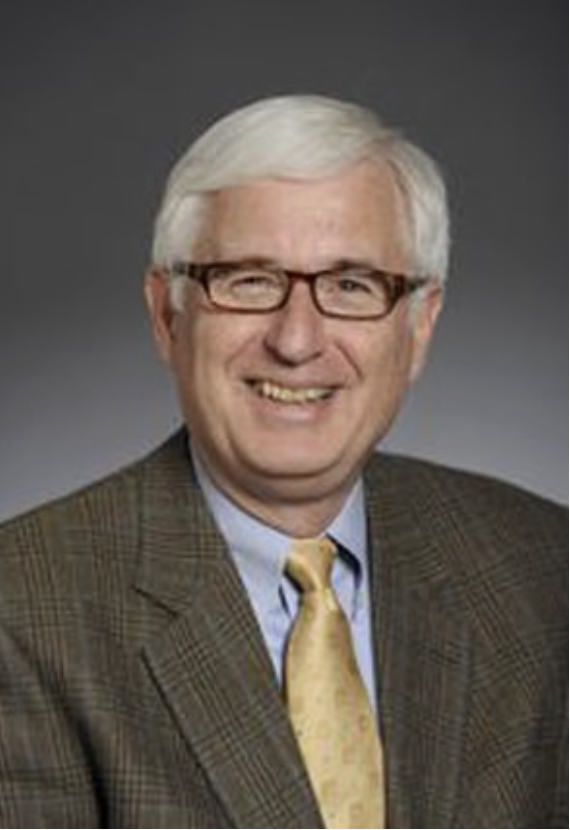

- Introduction
- Family History/Heritage
- Early History
- Michigan State – Undergraduate
- Princeton – Graduate School
- Les Houches, Summer 1965
- Caltech
- Marriage
- Stanford – SLAC Postdoctoral Fellow
- Stanford – SLAC Faculty
- SSC – Before 1990
- SSC – 1990 to 1995
- Carnegie Mellon – Buhl Professor of Theoretical Physics
- DOE
- US HEP and Astronomy/Astrophysics
- Bay Area Jewish Community
- China–US Cooperation in HEP
- OIST Board of Councilors
- Public Talks and Activity